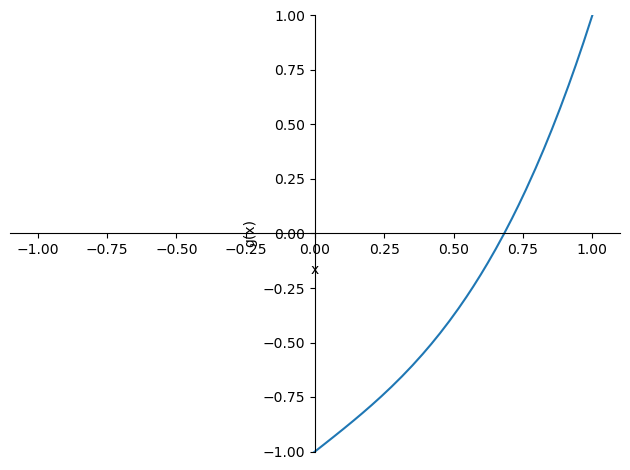
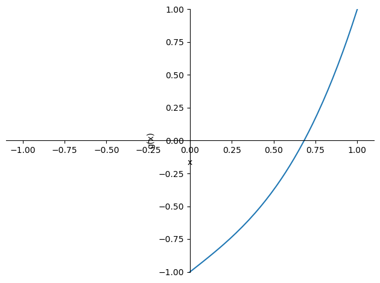
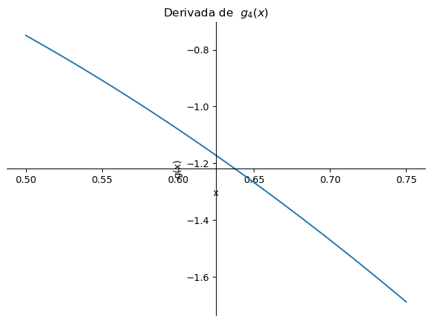
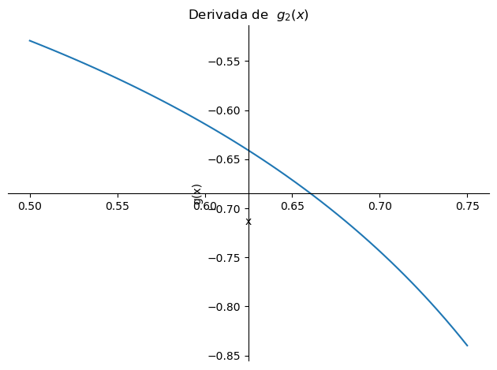
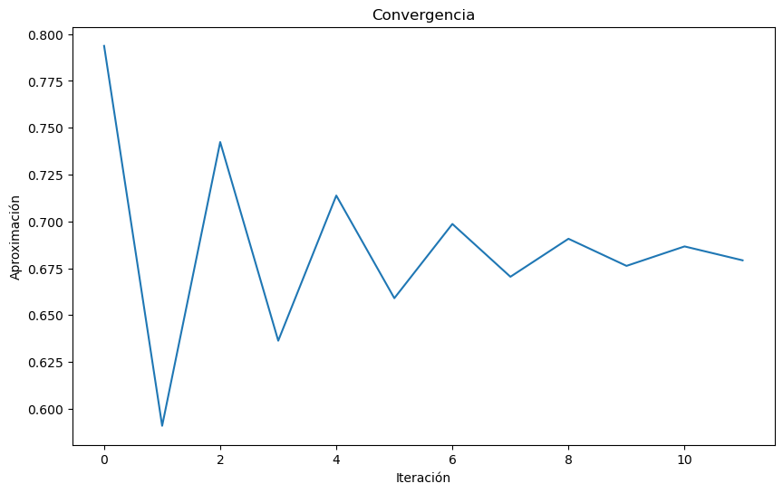
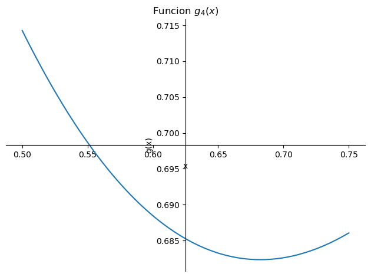
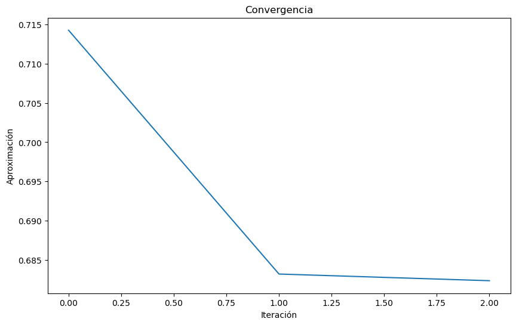

import sympy as sp
x=sp.Symbol('x')
f=x**3+x-1
sp.plot(f, (x, -1, 1), ylim=(-1, 1), ylabel='g(x)', xlabel='x')
<sympy.plotting.plot.Plot at 0x7fb520c77a90>Decimos que una función tiene un punto fijo si existe un valor \(x^*\) tal que \(f(x^*) = x^*\).
Por ejemplo, la función \(f(x) = x^2\) tiene un punto fijo en \(x^* = 0\) y \(x^*=1\).
Esta definición la podemos usar para encontrar la raíz de una ecuación \(f(x) = 0\).
\[f(x)=x^3+x-1\] aquí podremos encontrar una raíz de la ecuación \(f(x)=0\) si encontramos un punto fijo en la función \(g(x)=x-f(x)\). De esta forma \[g(x)=x-f(x)=x-x^3-x+1=x^3-1\]
Dado \(x_0\) x inicial queremos encontrar \[x_{i+1}=g(x_i)\] tal que \(x_{i+1}\) converja a \(x^*\).
Si una iteración del punto fijo converge a \(x^*\), entonces \(x^*\) es un punto fijo de \(g(x)\)
Una función \(g(x)\), diferenciable en \((a,b)\) y continua en \([a,b]\), esta tiene un punto fijo en \(x^*\) en \([a,b]\) si existe un \(k\) tal que \[|g'(x)|<k\leq 1\]
Queremos encontrar la raíz de la ecuación \(f(x)=x^3+x-1\) usando el método del punto fijo. Para esto lo primero que deberíamos hacer es verificar que la función \(f(x)\) tengo una raíz. Para esto graficamos la función \(f(x)\)
import sympy as sp
x=sp.Symbol('x')
f=x**3+x-1
sp.plot(f, (x, -1, 1), ylim=(-1, 1), ylabel='g(x)', xlabel='x')
<sympy.plotting.plot.Plot at 0x7fb520c77a90>Tenemos varias candidatas para la función \(g\), vamos a explorar algunas de ellas. 1. Note que si \[f(x)=x^3+x-1\] podemos reescribir la ecuación como \[x^3+x-1=0\] \[x=1-x^3\] así obtenemos \(g_1\) \[g_1(x)=1-x^3\] 2. Note que si \[x^3+x-1=0\] \[x^3=1-x\] \[x=\sqrt[3]{1-x}\] así obtenemos \(g_2\) \[g_2(x)=\sqrt[3]{1-x}\] 3. Note que si \[x^3+x-1=0\] \[x^3+x=1\] \[x(x^2+1)=1\] así obtenemos \(g_3\) \[g_3(x)=\frac{1}{1+x^2}\]
\[x=\frac{1+2x^3}{3x^2+1}.\] así obtenemos \(g_3\) \[g_4(x)=\frac{1+2x^3}{3x^2+1}\]
Ahora vamos a probar si las funciones \(g_i\) tienen un punto fijo. Para esto vamos a ver si la iteración del punto fijo converge a un punto fijo de \(g_i\).
import pandas as pd
## iteración del punto fijo
def punto_fijo(f, x0, tol, maxiter):
df=[]
x = x0
for i in range(maxiter):
x_new = f(x)
error = abs(x_new - x)
df.append([i, x_new, error])
if error < tol:
print("El método converge en la iteración:", i)
return x_new, i, df,True
x = x_new
print("El método no converge después de", maxiter, "iteraciones")
return x, maxiter, df, False
g= lambda x: 1-x**3
x0=0.5
tol=1e-5
maxiter=15
punto_fijo(g, x0, tol, maxiter)El método no converge después de 15 iteraciones(1.0,
15,
[[0, 0.875, 0.375],
[1, 0.330078125, 0.544921875],
[2, 0.9640374705195427, 0.6339593455195427],
[3, 0.10405418832767732, 0.8599832821918654],
[4, 0.9988733767808354, 0.8948191884531581],
[5, 0.003376063247859995, 0.9954973135329754],
[6, 0.999999961520296, 0.996623898272436],
[7, 1.1543910749534092e-07, 0.9999998460811885],
[8, 1.0, 0.9999998845608925],
[9, 0.0, 1.0],
[10, 1.0, 1.0],
[11, 0.0, 1.0],
[12, 1.0, 1.0],
[13, 0.0, 1.0],
[14, 1.0, 1.0]],
False)Como vimos anteriormente la iteración no converge. Verifiquemos si la función \(g_1\) cumple con el teorema del punto fijo. Para esto calculemos la derivada de \(g_1\) y la graficaremos en el intervalo \([0.5,0.75]\). Para ello vamos a calcular la derivada de \(g_1\) usando la libreria sympy
import sympy as sp
x=sp.Symbol('x')
g=1-x**3
dg=sp.diff(g, x)
sp.plot(dg, (x, 0.5, 0.75), ylabel='g(x)', xlabel='x',title='Derivada de $g_1(x)$')
<sympy.plotting.plot.Plot at 0x7fb52077d990>Como vemos en ese intervalo tenemos que la función no cumple con el teorema del punto fijo, puesto que en algunos puntos la derivada es mayor que 1.
Vamos primero a verificar si cumple el teorema del punto fijo. Para esto calculemos la derivada de \(g_2\) y la graficaremos en el intervalo \([0.5,0.75]\). Para ello vamos a calcular la derivada de \(g_2\) usando la libreria sympy
import sympy as sp
x=sp.Symbol('x')
g=sp.cbrt(1-x)
dg=sp.diff(g, x)
sp.plot(dg, (x, 0.5, 0.75), ylabel='g(x)', xlabel='x',title='Derivada de $g_2(x)$')
<sympy.plotting.plot.Plot at 0x7fb52048a050>Como observamos en la gráfica la función cumple con el teorema del punto fijo. Ahora vamos a ver si la iteración converge a un punto fijo de \(g_2\).
g= lambda x: pow(1-x,1/3)
x0=0.5
tol=1e-2
maxiter=12
x,iter_al,df,estado=punto_fijo(g, x0, tol, maxiter)El método converge en la iteración: 11import matplotlib.pyplot as plt
import pandas as pd
df=pd.DataFrame(df, columns=["Iteracion", "Aproximacion", "Error"])
columna_a_graficar = df["Aproximacion"]
# Ahora, puedes crear el gráfico
plt.figure(figsize=(10, 6)) # Opcional: ajusta el tamaño del gráfico
plt.plot(columna_a_graficar)
plt.title("Convergencia")
plt.xlabel("Iteración")
plt.ylabel("Aproximación")
# Muestra el gráfico
plt.show()
De forma similar podemos verificar para \(g_3\), ahora en el caso de \(g_4\) podemos observar que la función converge en menos iteraciones. Esto es debido a la forma de la función \(g_4\), ya que esta después de la primera iteración se acerca más rápido al punto fijo y converge al cabo de 2 iteraciones para la tolerancia de \(10^{-2}\)
import sympy as sp
x=sp.Symbol('x')
g=(1+2*x**3)/(1+3*x**2)
sp.plot(g, (x, 0.5, 0.75), ylabel='g(x)', xlabel='x',title='Función $g_4(x)$')
<sympy.plotting.plot.Plot at 0x7fb52061e510>g= lambda x: (1+2*x**3)/(1+3*x**2)
x0=0.5
tol=1e-2
maxiter=12
x,iter_al,df,estado=punto_fijo(g, x0, tol, maxiter)
import matplotlib.pyplot as plt
import pandas as pd
df=pd.DataFrame(df, columns=["Iteracion", "Aproximacion", "Error"])
columna_a_graficar = df["Aproximacion"]
# Ahora, puedes crear el gráfico
plt.figure(figsize=(10, 6)) # Opcional: ajusta el tamaño del gráfico
plt.plot(columna_a_graficar)
plt.title("Convergencia")
plt.xlabel("Iteración")
plt.ylabel("Aproximación")
# Muestra el gráfico
plt.show()El método converge en la iteración: 2